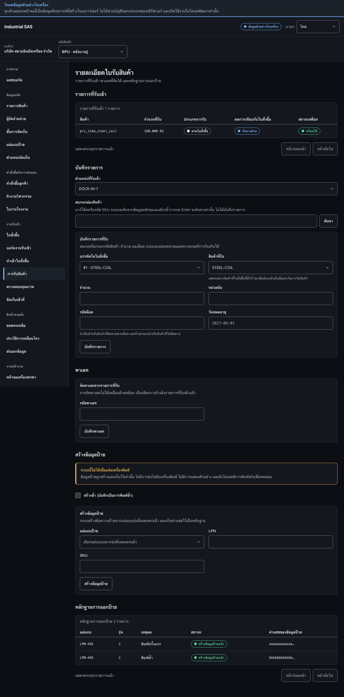

บันทึกรายการรับ พาเลท และข้อมูลป้ายRecord receipt lines, a pallet, and label evidence
บันทึกจำนวนที่รับจริงพร้อมล็อตและวันหมดอายุ รวมรายการไว้บนพาเลท และสร้างข้อมูลป้ายRecord what was actually received with lot and expiry, build a pallet, and create label evidence.
สิ่งที่ต้องมีก่อนเริ่มBefore you start
- มีใบรับสินค้าที่เปิดอยู่An open receipt exists
- ทราบตำแหน่งรับเข้าและมีแม่แบบป้ายที่เผยแพร่แล้วเมื่อจะสร้างข้อมูลป้ายThe receiving location is known, and a published label template exists if label evidence is needed

ขั้นตอนSteps
- ที่กรอบ 1 เลือกตำแหน่งรับเข้า สแกนหรือค้นหาสินค้า เลือกบรรทัดใบสั่งซื้อ แล้วกรอกจำนวน หน่วยนับ ล็อต และวันหมดอายุ จากนั้นกด “บันทึกรายการ”In box 1, choose the receiving location, scan or search the item, choose the order line, enter quantity, unit of measure, lot, and expiry date, then press “Save line”.
- ที่กรอบ 2 กรอกรหัสพาเลท แล้วกด “บันทึกพาเลท” เมื่อต้องรวมรายการรับไว้บนพาเลทIn box 2, enter the pallet code and press “Save pallet” when the received lines belong on one pallet.
- ที่กรอบ 3 เลือกแม่แบบป้ายที่เผยแพร่แล้ว กรอก LPN และ SKU แล้วกด “สร้างข้อมูลป้าย”In box 3, choose a published label template, enter the LPN and SKU, then press “Create label evidence”.
ตรวจว่างานสำเร็จอย่างไรHow to tell it worked
- รายการปรากฏในตาราง “รายการที่รับเข้า”The line appears in the “Received lines” table.
- สถานะสต็อกแสดงผลตามกฎการตรวจสอบคุณภาพThe stock status reflects the quality-control rule that applies.